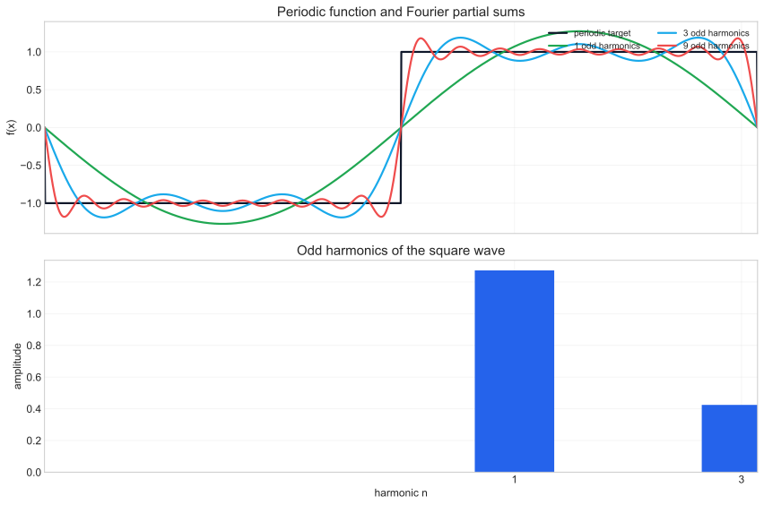
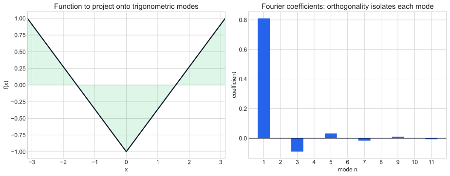
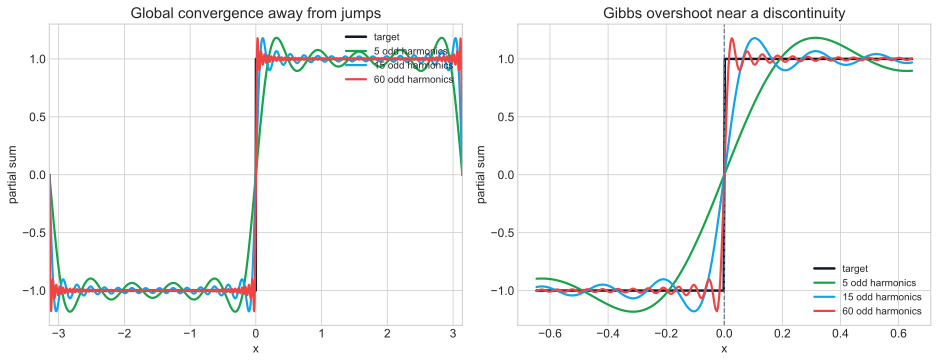
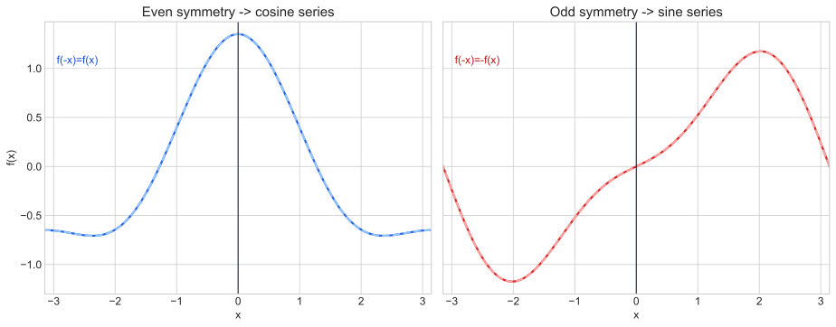
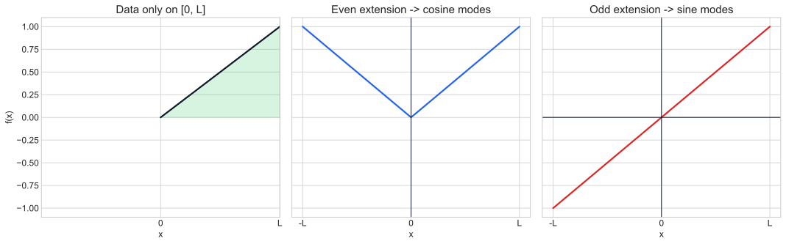
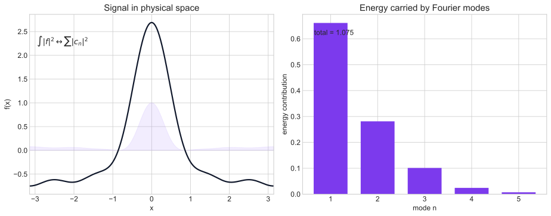
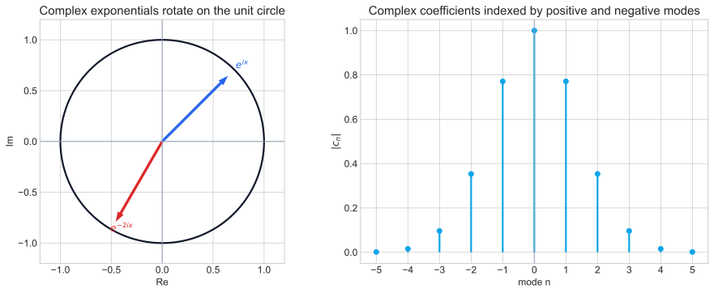
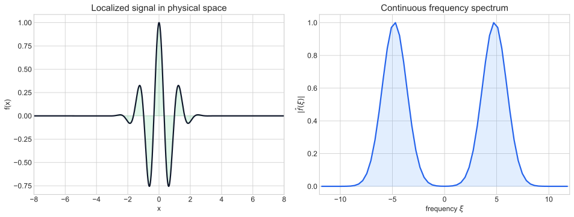

08-01 Periodic Functions and Fourier Series
The opening figure compares a periodic target with successive partial sums and shows how odd harmonics build a square-wave profile.

This page gathers the new visual assets for Chapter 08 on Fourier series and orthogonal expansions. The illustrations are static, but they are designed to surface the main mathematical picture of each lesson: harmonic decomposition, coefficient spectra, Gibbs oscillation, parity, half-range extensions, energy identities, complex exponentials, and the shift from discrete harmonics to a continuous frequency spectrum.
The opening figure compares a periodic target with successive partial sums and shows how odd harmonics build a square-wave profile.

This illustration frames coefficients as projections: one side shows the function, the other shows the spectrum isolated by orthogonality.

The two-panel layout shows good global convergence away from jumps and the localized overshoot of the Gibbs phenomenon near a discontinuity.

The figure uses symmetry overlays to make the cosine-even and sine-odd correspondence visually immediate.

The three panels move from data on [0, L] to even and odd extensions on [-L, L], emphasizing why the choice of extension encodes boundary structure.

This illustration pairs a signal in physical space with a bar chart of mode energies to highlight Parseval as an energy balance law.

The gallery card combines the unit-circle view of complex exponentials with a two-sided coefficient spectrum indexed by positive and negative integers.

The final figure compares a localized physical-space signal with its continuous spectrum, making the transition from discrete harmonics to a frequency continuum concrete.
